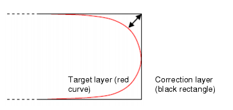

If you notice
that the wrong layer received OPC correction, or that the process
window conditions were not aggressive enough, you need to fix the
general section of the pxopc_options block.
Procedure
- Verify the correct
geometries are being passed:
The Layer statement in
the SVRF file is set to the correct design layer.
If you have smoothed the
target layer, the RET PXOPC call passes the smoothed layer to the
setup file as the target layer, and the original design layer (the design
intent) as a correction layer. A smooth target is preferred over
a rectilinear target.
If
you have smoothed the target layer, check the amount. Measure as
shown in Figure 1. The offset of the target from the
corner should be in the range of 1⁄6 to 1⁄4 of the critical distance (CD).
For line ends, it should be slightly greater than 1⁄4; for example,
15 to 17 nm for a 60 nm CD. For contacts, it should be closer to
1⁄6; for example, 10 to 12 nm for a 60 nm CD.
Figure 1. Where to Measure Offset
on Smoothed Shapes
In the setlayer pxopc call, the order of layers matches
the order of layer statements in the pxopc_options block.
The layers passed by setlayer pxopc are mapped in order to the layer statements,
just as the RET PXOPC input layers are mapped in order to the layer statements
in the main setup file.
Any SRAFs are on a separate layer from
the main features.
If multiple layers are
passed, set the init command to use the design intent
layer.
- Increase the process window.
For best results, use at least three process conditions: nominal,
underexposed, and overexposed.
Bright Features (more
common)
Figure 2. Recommended Process
Conditions for Bright Features
Tip To prevent SRAFs from printing after MRC is performed,
the inner and outer process corners should use 1 to 2% larger exposure
latitude and 10% larger focus latitude than the similar process
corners in the Calibre OPCverify or other verification tool. Using
the verification box of Figure 2, this means the OPCverify conditions
should be inside the box, but the pxOPC conditions are outside the
box (shown as red dots).
If
there is an obligatory mask bias, add it to the OUTER condition
and subtract it from the INNER condition. For example, for a mask
bias of 1 nm, the statements become:
pw_condition NOMINAL optical f0 dose 1 aerial 0.21
pw_condition OUTER optical f0 dose 1.05 aerial 0.21 \
mask_size 0.001
pw_condition INNER optical f40 dose 0.95 aerial 0.21 \
mask_size -0.001
Dark Features
When the absolute value of the background is greater than the
absolute value of the transmission of the correction layer, try
these process conditions.
Figure 3. Recommend
Process Conditions for Dark Features
- Re-run Calibre pxOPC and check
the output. If the correct geometries are being simulated but the
output still needs improvement, proceed to “Fixing Open Job Problems”.
Results
The
layers are correctly configured. Process corners are considered
in the optimization.